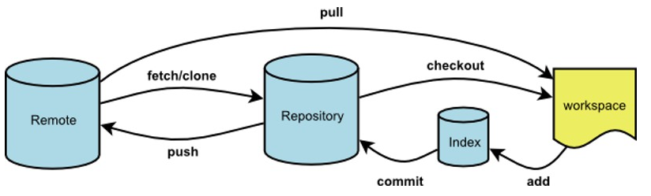

1.1. 核心流程图

1.2. 文件四种状态
- Untracked
- Staged / Index
- Unmodified / Head
- Modified
新增文件，处于Untracked；
git add后，处于Staged；
git commit后，处于Unmodified；
修改Unmodified的文件，那么就处于Modified状态；
1.3. 常用命令
git add
git commit
git push
git status
git branch
git rebase
git merge
git stash
git pull
git fetch
git log
git reflog
git remote
git clone
gti reset
1.4. git rest模式
git reset
- --hard：不保存所有变更
- --soft：保留变更且变更内容处于Staged
- --mixed：保留变更且变更内容
1.5. git branch
git branch //查看本地所有分支
git branch -r //查看远程所有分支
git branch -a //查看本地和远程的所有分支
git branch <branchname> //新建分支
git branch -d <branchname> //删除本地分支
git branch -d -r <branchname> //删除远程分支，删除后还需推送到服务器
git push origin:<branchname> //删除后推送至服务器
git branch -m <oldbranch> <newbranch> //重命名本地分支
//git中一些选项解释:
-d --delete：删除
-D --delete --force的快捷键
-f --force：强制
-m --move：移动或重命名
-M --move --force的快捷键
-r --remote：远程
-a --all：所有
1.6. git checkout
git checkout -b <name> <template> 创建并切换分支
git checkout -b <name> origin <template> 从远程仓库拉取分支
name:分支名字
template：以哪个分支或者commit为模板，如果不填则以当前所在分支为模板
git push --set-upstream origin bc-a 将远程仓库分支作为上流分支
1.7. git pull
git pull = git fetch + git merge
git merge
1.8. git rebase
枚举变更的commit依次变基，指重新排列base，而base就是commit
当前分支： git rebase master
解决冲突后：git rebase --continue
1.9. git stash
使用场景：index.html 已经commit了，当前index.html又做了一些修改并且不想提交，但是原来的commit版本上要修复bug，就可先用git stash把工作区的修改暂存起来
git stash list 显示暂存列表
git stash apply 恢复暂存，但是保留暂存列表信息
git stash pop恢复暂存，但删除暂存列表信息